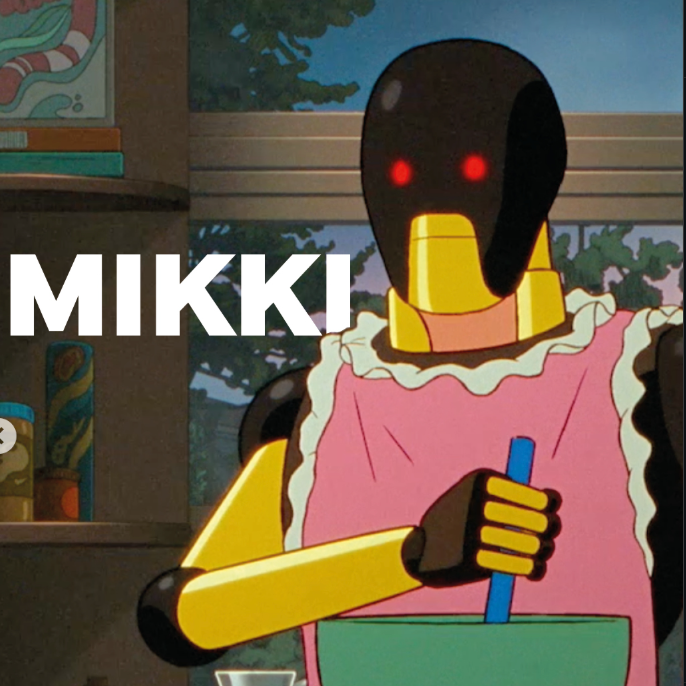
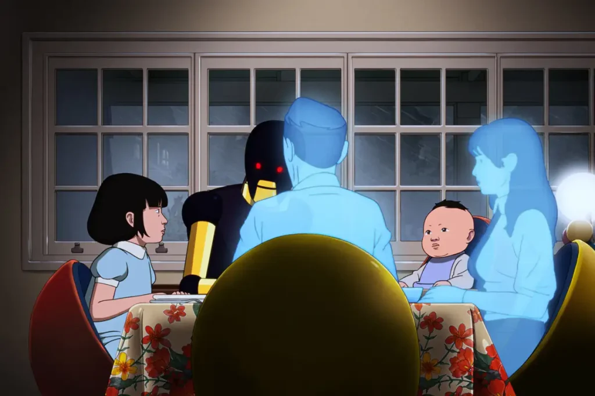

ARCO
![La imagen es muy colorida y tiene un estilo animado.
En el centro se ven dos personajes. Uno está cargando al otro sobre la espalda. El personaje que va adelante tiene la cabeza rapada y una expresión seria, mirando directamente hacia el frente. El que va detrás parece más joven, con cabello oscuro, y abraza al primero por los hombros, como si se estuviera sosteniendo mientras avanzan juntos.
Desde el centro de la cabeza del personaje de adelante salen varios rayos de luz blanca muy brillante, que se extienden en distintas direcciones, como si fuera una explosión de energía o un punto de conexión muy intenso.
El fondo está lleno de colores vivos que se mezclan en ondas suaves: amarillo, verde, azul, rosa y rojo. Estos colores parecen fluir alrededor de los personajes, creando una sensación de movimiento y energía.
A la izquierda de la imagen, en letras grandes y blancas, aparece la palabra “ARCO”.
En general, la imagen transmite una sensación de conexión, intensidad emocional y algo casi mágico o surrealista.](img/Posterhorizontal.jpg)
Introducción
Arco es una película animada de aventura y ciencia ficción dirigida por Ugo Bienvenu. La historia sigue a un niño llamado Arco que proviene de un futuro muy avanzado donde existen viajes en el tiempo. Durante una de estas aventuras, Arco termina atrapado en el año 2075, un mundo muy diferente al suyo. Allí conoce a Iris, una niña que decide ayudarlo a regresar a casa.
La película combina una historia de amistad con reflexiones sobre el futuro del planeta, la tecnología y las relaciones humanas.
![La escena principal muestra a un niño pequeño volando por el cielo. Lleva una capa grande que se despliega detrás de él como si fuera una ala, con colores brillantes tipo arcoíris (verde, rojo, amarillo y azul). El niño va en posición horizontal, con los brazos extendidos hacia adelante, como si estuviera planeando o volando libremente. De su mano o pecho sale un pequeño destello de luz, que resalta en medio del cielo.
El fondo es muy llamativo: un cielo lleno de nubes suaves con tonos rosados, morados y anaranjados, como un atardecer. Las nubes están iluminadas de forma cálida, creando una atmósfera tranquila y mágica.
En la parte inferior y lateral se ven estructuras flotantes, como plataformas o puentes rotos suspendidos en el aire, cubiertos con vegetación. Esto da la sensación de un mundo fantástico o futurista.
En la parte superior del cartel hay varios textos de premios:
Indica que fue ganadora en los premios europeos de cine como mejor película animada.
También dice que estuvo nominada al Oscar y al Golden Globe en la misma categoría.
En el centro inferior aparece el título grande: “ARCO”, en letras blancas muy grandes.
Debajo dice que es una película de Ugo Bienvenu.
Más abajo hay nombres del elenco de voces y, al final, una fecha de estreno: “23 de enero solo en cines”.
En conjunto, la imagen transmite una sensación de aventura, libertad y fantasía, con un estilo visual muy colorido y emotivo.](img/posterarco.jpeg)
Arco
Arco es un niño que vive en un futuro lejano donde las personas pueden viajar en el tiempo utilizando trajes especiales que dejan una estela de colores en el cielo. Es curioso y aventurero, pero su deseo de explorar lo lleva accidentalmente a quedar atrapado en otra época.
![La imagen muestra a un niño animado visto desde un ángulo bajo, como si lo estuviéramos mirando desde abajo. Tiene el cabello corto y oscuro, algo despeinado, con mechones que sobresalen ligeramente. Su rostro está iluminado por una luz cálida, probablemente del sol, lo que le da tonos dorados a su piel.
Sus ojos están abiertos y mirando hacia arriba, con una expresión de curiosidad o asombro, como si estuviera observando algo en el cielo. Su boca está ligeramente entreabierta, reforzando esa sensación de sorpresa o atención.
Viste una prenda superior de colores vivos, con tonos que parecen reflejar un arcoíris en la zona del cuello y el pecho. Encima lleva algo similar a una chaqueta o sudadera en tonos rojizos o anaranjados.
El fondo es un cielo claro, con un degradado suave de azul, y en un lado se alcanzan a ver ramas de un árbol con hojas verdes. La iluminación sugiere que es de día, posiblemente en la tarde por el tono cálido de la luz.
En general, la escena transmite una sensación tranquila y contemplativa, como un momento en el que el niño está descubriendo o admirando algo importante.](img/arco.jpg)
Iris
Iris es una niña de diez años que vive en el año 2075. En su mundo la tecnología es muy avanzada y muchos niños crecen con la ayuda de robots. Cuando encuentra a Arco, decide ayudarlo a regresar a su hogar, iniciando una aventura llena de desafíos.
![La imagen muestra a una niña animada de pie en medio de un bosque.
Tiene el cabello corto, lacio y oscuro, cortado en forma recta a la altura de la mandíbula, con flequillo. Su rostro es redondo y su expresión es neutral, quizá un poco seria o pensativa, con la mirada dirigida hacia el frente, como si estuviera observando algo con atención.
Viste una camisa clara, de manga larga, con un diseño sencillo. En el centro de la camisa hay una línea vertical más oscura que parece parte del diseño o una costura visible.
El fondo está compuesto por árboles altos con troncos gruesos y hojas verdes que llenan casi toda la escena. La luz es suave y difusa, como si el sol estuviera filtrándose entre las hojas, creando un ambiente natural, tranquilo y ligeramente misterioso.
En general, la imagen transmite una sensación de calma, silencio y contemplación dentro de la naturaleza.](img/iris.jpg)
Mikki
El robot que cuida a Iris cumple el papel de guía y protector. Representa la presencia de la tecnología en la vida cotidiana y muestra cómo las máquinas pueden formar parte de la familia y el cuidado de los niños.

Historia de la película
La historia comienza cuando Arco se escapa para experimentar un viaje en el tiempo por su cuenta. Sin embargo, algo sale mal y termina en el año 2075, un mundo marcado por desastres naturales, ciudades tecnológicas y la ausencia frecuente de los padres debido al trabajo.
En este nuevo entorno conoce a Iris, quien decide ayudarlo a encontrar la forma de volver a su época. Durante su viaje, ambos descubren la importancia de la amistad, la familia y la responsabilidad hacia el planeta.

Temas de la pelicula
Amistad: la relación entre Arco e Iris demuestra cómo dos personas de mundos diferentes pueden apoyarse mutuamente.
Tecnología y sociedad: el futuro presentado muestra cómo la tecnología influye en la vida diaria de las personas.
Cuidado del planeta: la historia también reflexiona sobre los efectos de los desastres naturales y el impacto ambiental.
Familia: aunque los personajes viven en contextos diferentes, ambos aprenden a valorar a sus familias.
![Persona de pie en un entorno interior con iluminación tenue. Tiene la piel oscura y el cabello corto. Lleva una camisa clara de manga corta con tirantes oscuros y un reloj en la muñeca izquierda. Su expresión es seria y concentrada. En la nariz se observan pequeños trozos de algodón con manchas rojas, indicando un sangrado nasal reciente. Con una mano sostiene un billete doblado cerca de su rostro. El fondo está desenfocado y muestra un espacio que parece un local o establecimiento, con letreros poco legibles en tonos cálidos.](img/Arcoiris.jpg)
Trailer accesible
Aqui encontraras el video accesible del trailer de la pelicula.